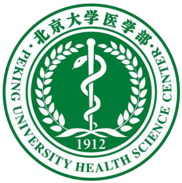
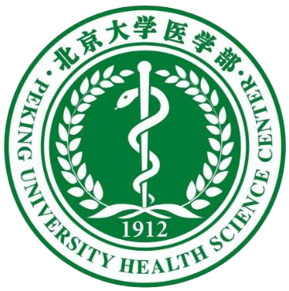
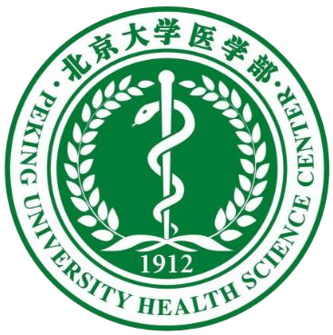

孙正澜
我来自苏州。我兴趣广泛。现会拉小提琴，曾会弹钢琴。不怎么爱运动，但是各项目都会一点点。本人性格外i内e，平时喜欢在网上冲浪，有点宅，但不排斥外出，在公共场合可能会无所适从。喜欢听故事、看历史书。
许熙雅
“白衣天使，大爱人间”的精神激发了我对医学最初的兴趣，如今成为了一名真正的医学生，惟愿坚持学习以求“上以疗君亲之疾，下以救贫贱之厄”。希望在大学积累知识，丰厚学养，不断努力，成为一名合格的医生、一个有益社会的人。
姜舒菡
我来自河北沧州，爱好绘画，作为生活委员协调和管理着班级的日常事务，正在不断探索着新的世界。
罗嘉湘
我来自中国澳门（但家在广东珠海啦）。初中高中都在澳门濠江中学就读，理科基础薄弱（正在努力赶进度）。爱好追星和吃（主要是海鲜粤菜日料）。目标是大学生活一切顺利，心想事成。
彭晖
我来自江西宜春。平时性格比较腼腆，相较于出去与人交往，更享受一个人独处的时间。爱好不多，闲暇时喜欢画画，虽然画的不是很好。喜欢看动漫，但口味比较独特。喜欢阅读，看的书杂七杂八涉猎广泛，但大都不求甚解，主要追求阅读过程中的情绪体验。为人处事比较随和，对自己和他人都比较宽容，对人对事态度很洒脱。
张芳怡
我来自辽宁大连，一座美丽的海滨城市。我在高中时期就对医学产生了浓厚的兴趣，因为我认为医学不仅能系统地研究疾病，更能切实地帮助具体的人解除病苦。作为医学生，我意识到医学之路并不容易，尽管如此，我还是充满热情地投入到学习中，收获颇丰。希望接下来的日子，我能继续秉持谦卑严谨的态度不懈努力，成为优秀的医疗工作者。
龙振熠
我来自广东。爱好比较广泛，喜欢看小说，看动漫以及和朋友一起出去走走。喜欢的运动是跑步和打羽毛球，也喜欢尝试没试过的运动或是一些户外小游戏。喜爱美食，同时也会尝试自己制作，但水平不高。对旅游感兴趣，偏好慢节奏的旅游，不追求看完所有景点。
徐淑雅
我来自福建厦门，毕业于厦门英才学校。我对医学和人体科学非常感兴趣，因此选择了医学专业作为我的学习方向。我渴望通过学习，将来能够运用医学知识来帮助他人，为社会做出贡献。期待在未来的学习生活里，与大家一起进步成长。
闻彤
我的名字叫闻彤，十九岁，来自北京，但并不熟悉北京。比较平易近人，喜欢开开玩笑，有责任心，热爱集体。在学习方面，对感兴趣的内容会有较高热情，对不感兴趣的会相对摆烂。课余时会打游戏，进行一些体育活动（羽毛球），也会弹一些吉他，看看书和电影等，兴趣爱好较为广泛，如果有人一起也很热衷于出去游玩。请大家多多指教！
黄文哲
我是来自浙江宁波的黄文哲 ，一个社牛的白羊座，爱好魔方、羽毛球与摄影。
刘泽熙
我是刘泽熙，来自北京。我热爱体育运动，喜欢打乒乓球，曾经参与过北大新生杯并取得男子双打第八名。我也对音乐比较感兴趣，现加入民乐团的打击声部，参与了多场演出。我勇于接受新事物，乐于团队合作，敢于尝试突破。希望今后能够在医学的道路上越走越远。
汤进奕
我来自人杰地灵的江西抚州。我性格比较外向，喜欢桌游，常参加三国杀和狼人杀的局，偶尔也玩玩剧本杀，热爱运动，爱踢足球，但是小白。我喜欢跑步，闲来无事就会绕未名湖跑上几圈，也喜欢听着jay的音乐在风景区散步放松心情。
王婕
我来自安徽宣城。平时兴趣是画画和手工，水平不高仅自娱自乐，闲暇时还喜欢看动漫和一些纪录片，对植物很感兴趣。我是畲族人，会说一点畲族话，也对民族文化有着浓厚的兴趣。希望以后能和同学们友好相处，在大学中学有所成，丰富自己。
狄健坤
我是狄健坤。自强不息、厚德载物，这是名字的寓意，也是我为人处世的标准。很荣幸成为临床四班的一员，认识有趣的同学们与循循善诱的老师们，期待未来在医学之路上和大家携手共进！
彭天歌
我来自湖北襄阳。兴趣爱好非常广泛，喜欢各种运动，对各种乐器都有浓厚兴趣，比较擅长钢琴和吉他。非常希望能和大家成为朋友！
孙子柯
我来自内蒙古自治区，目前就读于北京大学医学部临床医学专业。我是个兴趣相对广泛的人，对小说、电影、音乐都很感兴趣，最喜欢的小说家是石黑一雄，最喜欢的乐队是英国的酷玩乐队。我的mbti人格是infp，所以在平时偏内向一点，社交中并不主动，这也是我一直的性格，不过我和熟悉了的朋友会比较放得开，也愿意和比较e的朋友多多交往。
刘一鸣
我来自河南省周口市的一个小乡村。在日常生活中，我比较喜欢读小说，还有吹着风，听着音乐，骑行在北京的街道上，享受那种空旷的感觉。此外，闲来无事还喜欢跑步和打球。高三一次甲流，令我对医学的态度从疫情时期的感动转变成对医学知识的向往。我认识到医学的重要意义，我也将为之奋斗。
傅敏泽
我是傅敏泽，十分高兴能够融入到医学部这个大家庭里面！我喜欢听歌，是一个十足的“旋律控”，尤其对ACDC，QUEEN以及同时代的摇滚乐队着迷。我也喜欢摄影，我认为通过镜头去欣赏祖国的大好河山是一件十分美妙的事情！来到这里我遇到了很多志同道合的同学，我也很希望能够和大家做朋友，认识更多的人，一起学习，共同进步！
曾思祺
我是来自江西吉安的曾思祺，虽然是e人但是莫名的社恐，虽然社恐但是非常的话唠（算是个乐子人），性格温和，豁达乐观，偶发性中二。热爱追番，喜欢推理悬疑，也喜欢唱歌画画。体育废物一枚，身体不协调之如同僵尸转世，如今之追求是争取下学期坐位体前屈及格。
来钰翺
我来自河南南阳。我热爱医学，希望能够运用自己所学知识与技能，来帮助世间更多人远离病痛的折磨。闲暇之余，我常常会阅读一些有关医学的书籍，韩启德先生《医学的温度》更是令我深深折服于医者的大爱奉献。我擅长演奏电子琴，也愿意和朋友切磋乒乓球技。最后，梦想成为医者的我也一定会在你需要时伸出援助之手。
海娜迪叶
我叫海娜迪叶，来自甘肃兰州。爱好悬疑推理，密室逃脱狂热爱好者+剧本杀老演员+戏精dm，有机会的话希望可以和大家一起愉快玩耍～喜欢了解各种奇奇怪怪的故事和各地不同的民俗传说风土人情，还喜欢骑马、潜水之类有趣的运动。未来希望能和大家相处愉快，交到志同道合的朋友～
谢佳潼
我是谢佳潼。喜静，所以读书写字，享受难得的独处时光。好动，所以永不停息，探索自我纪录的边缘。在半年的大学生活中不断受挫，不断适应，不断调整，不断改变，从一个彻底的南方小女孩渐渐向一个不彻底的北方人过渡。希望能在未来十年持续奔跑，不负所爱。
苏思钰
我来自贵州桐梓，高中就读于遵义市第四中学，我的爱好是小说，篮球，乒乓还有象棋，虽然在这些方面都实力不强，但是有进取的心（简称人菜瘾大），喜欢走走看看，希望能成为一位合格的医生。
陈禾
我叫陈禾，来自北京。我平时的爱好有听音乐、运动。在日常生活中我很喜欢音乐，经常会与朋友们分享我喜欢的歌曲。我也会与朋友们相约一起运动，如在晚上一起跑步，一起打篮球打台球等。我非常喜欢在运动中认识更多的朋友，并且与大家增近友谊。
郭昊灵
我来自江西，一个山清水秀的地方。主要爱好是旅游和摄影，喜欢去不同的地方走走拍拍，了解不同的人文，见识不同的景色。喜欢足球，不过上大学后已经很久没踢了；有在健身，希望自己能够坚持下去。也有在学习吉他。一直都知道学医很累，但我还是想以学习外的爱好丰富自己的生活。
李煜聖
鄙人姓李，名煜聖。好打球，喜书法，来自彩云之南，有着白族人家真诚待人之心 ，向往自由自在的生活。海风山林，乃我精神之居；从医治病，为我志之所趋。
公昕烨
我来自北京海淀。我性格内向，安静话少，社交方面非常社恐。我对待学习执着认真，与人交际真诚友善。兴趣爱好方面，我喜欢读书，热爱跳舞，爱好吃吃睡睡，喜欢汪汪叫。我喜欢我的专业，我会通过扎实的学习，在未来努力成为一位优秀的医生。
王思明
大家好，我叫王思明，我来自银河系-太阳系-地球-亚洲-中国-华北地区-北京市，是一名非常社恐的大学生，我性格内向，安静话少，不喜欢给别人添麻烦，不敢结交新朋友。尽管我没有特别突出的特长，但我希望在未来的大学生活中努力培养自己的各方面能力，以便更好地融入新生活。希望我能利用好时间拓展视野，培养属于自己的兴趣爱好。希望在班级中与优秀的各位同学们交流学习，能增长我的视野和能力。
陈子豪
我来自江西抚州，目前在临床四班就读，没有什么特别的爱好，偶尔玩玩游戏，看看小说，刷刷视频，不擅长也不喜欢运动，会一点球类但不多，看小说偏玄幻，玩游戏偏原类农类等大众游戏，刷视频偏b站，个性偏开朗但是不完全，对陌生人不自来熟，以后希望能有点小成就就行。
黄文鹤
我来自“泉城“济南。爱好动画、电影，喜欢捣鼓计算机，也有自己渲染制作过动画（虽然 B 站播放不高）。怀着对医学的憧憬，我成为了一名医学生，但是高中的 OI 经历让我对计算机科学也又爱又恨，于是成为了班里最像信科生的医学生。希望在临床四班的学习生活中能不断提高自己的水平，成为一名优秀的医生，并将计算机知识与医学知识结合，成为一名优秀的智能医学科研者。
王子汗
我是来自吉林长春的王子汗，一个正宗的东北老爷们，性格外向，心态阳光，热爱乒乓球、书法、吉他，目前在班级担任文艺委员，感到很幸运能来到临五四班。
蒋雨峰
我来自甘肃张掖。我是一个乐观积极、阳光向上的人，我热爱生活，喜欢阅读、音乐和旅行。我喜欢结交各种不同的朋友，通过与他们的交流，我能够获得更多的知识和经验，也能够更好地了解自己和这个世界。
黎川熙
我来自湖南常德，一座有着深厚历史文化底蕴的古城。从小，我就对医学抱有浓厚的兴趣。在我看来，医学是一门既神圣又充满挑战的学科，它关乎着人类的生命与健康。在今后的日子里，我希望能够通过学习医学知识，掌握治疗疾病的技能，为人们的健康事业贡献自己的力量。
蒲国鹏
我是蒲国鹏，来自四川，农村纯朴小男孩一枚。生性“顽劣”，又菜又爱玩，羽毛球，排球，乒乓球，台球都会一点点（仅限于一点点，嗯……有的项目会的程度可以忽略不计），会打一点王者，属于“见人疯”的类型，有人一起玩就会很开心。自认阳光开朗，乐于助人，现正勤学苦读（同时摸鱼），为成为一个救死扶伤的好医生而奋斗。
辛文渊
我来自山西省吕梁市，一片充满了烟火气与人情味儿的热土，生于此地，让我从小继承了山西人独有的热情，因而我待人真诚，对班级事务积极上心，除此之外，我喜欢各类运动，喜欢音乐，也同样喜欢各种桌游，我喜欢融在群体之中，与大家共同进步、欢乐。虽然知道未来的路遥远而漫长，但我愿意坚定地走下去。
